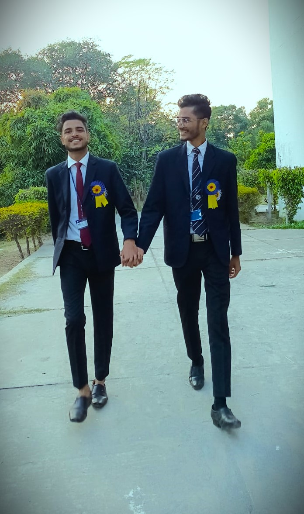

Welcome to BBSBEC
Baba Banda Singh Bahadur Engineering College, Fatehgarh Sahib, Punjab was established in the year 1993, under
the patronage of Shriomani Gurudwara Prabandhak Commitee, Sri Amritsar,
with the approval of the Govt. of Punjab. The college was a dream project of Panth Ratan Jathedar Gurcharan Singh Tohra,
ex-President of SGPC
The college is approved by the A.I.C.T.E, New Delhi, Ministry of H.R.D, GOI and is affiliated to
I.K. Gujral Punjab Technical University, Jalandhar.
The college has earned third time accreditation from the NBA for various programmes.
BBSBEC has also been accredited by the Institution of Engineers (India).
Presently, the college runs six B.Tech Programs, two B.Vocational courses, five M.Tech.
Programs and MBA. It is housed in a sprawling pollution-free campus of 90 acres and is located in the sacred surroundings of historic
Gurdwara of Fatehgarh Sahib.The college is named after Baba Banda Singh Bahadur, a great saint and warrior,
who conquered the Sirhind fort and laid to rest, the tyranny of the Mughal Empire.
It is one of the leading institutions in Engineering & Technology and is the most sought-after for admission by the students.
BBSBEC has also made a significant presence in the Techno-Educational field at international level.
